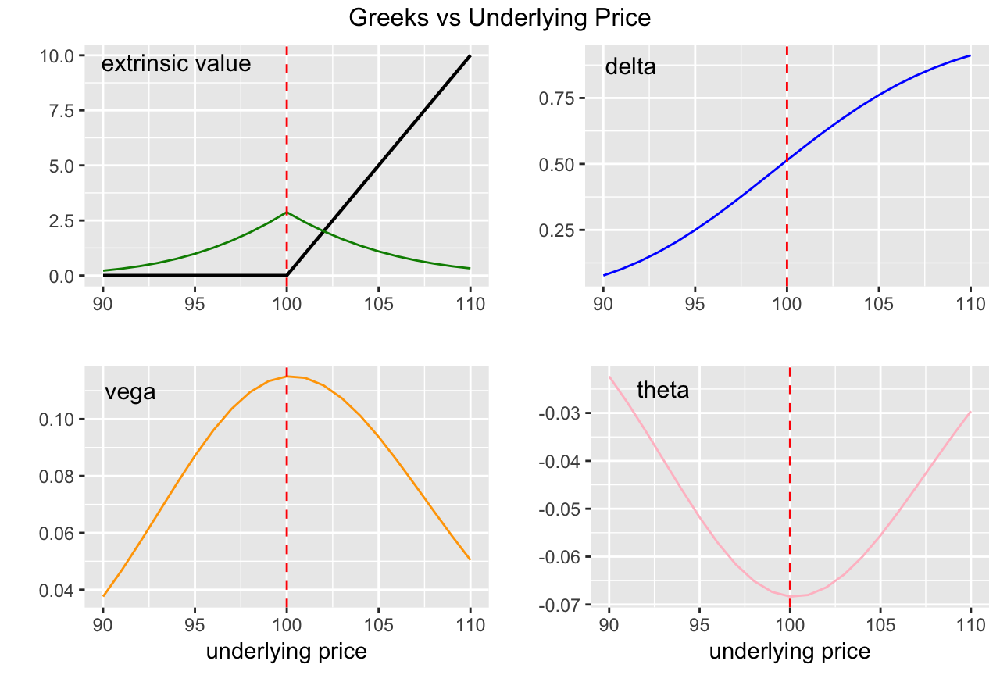
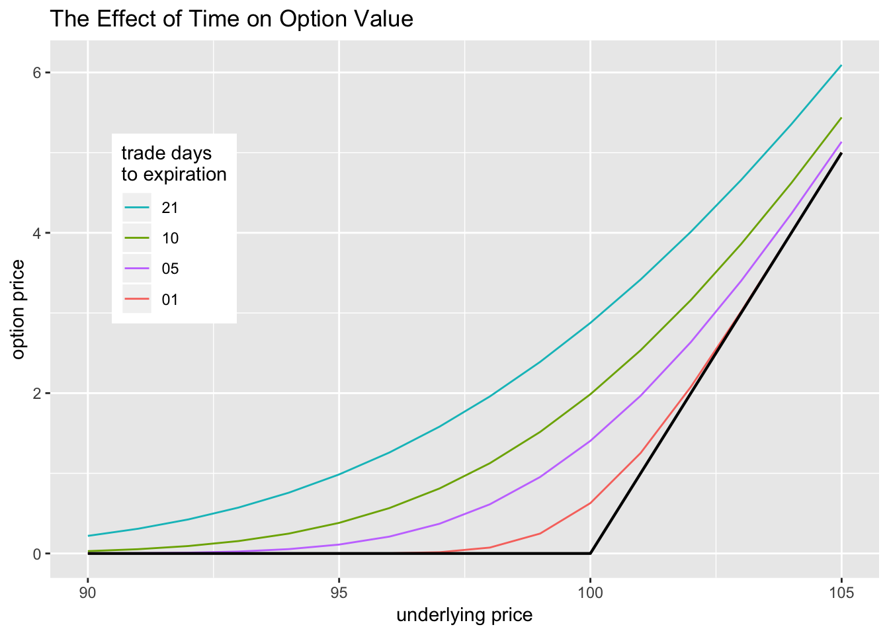
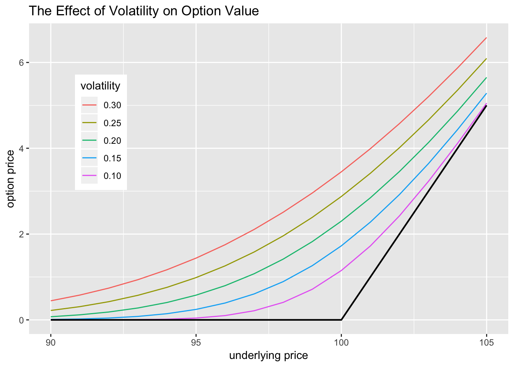

6 Option Pricing
What the price of an option be at any given point in time? This seems like an innocent question, but it took the collective quantitative finance community over one hundred years to answer in a satisfactory way. Along the way modern finance was born.
6.1 Black-Scholes-Merton
In the 1970s, decades of option pricing research coalesced into a pricing framework that yielded a fairly simple formula for pricing vanilla options. It is known as the Black-Scholes framework, being named after two of major contributers to it’s development Understanding the framework is more important than memorizing the formula.
The upshot of the BSM pricing framework is that given several contract features, and several market values, you can assign a value to an option.
Contract Features
p/c - put or call
\(K\) - strike price
T - expiration date (time to expiration)
Market Values
\(S_{t}\) - current underlying price
\(\sigma\) - estimate of the standard deviation log-return of the price of underlying between now and expiration
\(\delta\) - estimate of dividends paid over the life of the option
\(r\) - risk-free interest rate
All the inputs of the BSM formula are readily observable, except for \(\sigma\), also called volatility. The options market is the markets. The market for the underlying stock is the market.
Question: Suppose Jake is an SPY trader for Wolverine and that on a given day, the price of SPY drops by 10%. Should Jake increase or decrease \(\sigma\) in his pricing models?
6.2 Investment Risk Reduction
The ultimate goal of this section is to discuss delta-hedging and option replication. However, the notion of hedging in an derivatives context is often confused with two other ideas in finance, so I want to spend some time teasing them apart. Towards this end we will discuss three related concepts: - diversification of investments - hedging of investments - hedging for derivatives replication (including delta-hedging)
These three are related in that they are all manifestations of risk reduction.
Diversification of Investments
Let \(X_1\), \(X_2\) be two random variables with the same variance and \(corr(X_1, X_2) < 1\). Then we have that \[\begin{align*} sd(0.5 \cdot X_1 + 0.5 \cdot X_2) < sd(X_1) = sd(X_2). \end{align*}\]The financial intuition of this result is: if you are investing, and you have a choice between two assets that are equally risky (i.e. the same variance of returns), then you will always lower the riskiness of your portfolio by diversifying over both assets, rather than just investing in one. This result can be generalized to \(n\) random variables.
Spread your money over many different non-perfectly correlated investments and you will reduce your overall portfolio risk.
Exercises:
Use the
tidyqantpackage to download 5 years of SPY and IWM price data from Yahoo finance.Use the adjusted close prices to calculated daily log-returns for each ETF.
Calculate the standard deviation of the daily returns for both, and then create a seriese of scaled prices for IWM so that the scaled prices has the same standard deviation as SPY.
Hedging of Investments
Hedging in an investment context can be thought of as an extreme form of diversification. Suppose you have a position in some asset \(A\). Suppose you believe that asset \(B\) has a strong anti-correlation with \(A\): when the price of \(A\) goes down, the price of \(B\) goes up, and vice-versa. If you were to invest in asset \(B\) for this reason, it would be referred to as a hedge against \(A\).
In investments, diversification (previous concept) exploits uncorrelatedness, while hedging exploits anti-correlation.
Exercises:
Use the
tidyquantpackage to download 5 years of SPY and GDX price data from Yahoo finance.Google the GDX ETF and find out what it’s all about.
Suppose at the beginning of the 5 year period that you have $125K to invest.
You know that for sure you are going to invest $100K in SPY, but you’re not sure what to do with the additional $25K.
- You consider two options:
- keep it in cash
- invest in GDX
Compare the standard deviation of the portfolio returns for each choice.
GDX is negatively correlated with SPY, so it would be a hedge in the investment sense. Confirm this by comparing the standard deviations of the two portfolios and also by visualizing with
ggplot().
6.3 Forward Replication
Hedging in the context of derivatives means something quite different. It refers to engaging in a set of trades - called a replicating portfolio - that perfectly replicates the payoff of a derivative. If you can find such a replicating portfolio, and that replicating portfolio has a a known cost, then that is the no arbitrage price of the derivative.
Hedging is a both a theoretical pricing technique, and also a prescription for action for a trading desk that deals derivative contracts to its customers.
Yuchen works for Wolverine Trading’s forward contract desk. Yifei is one of Yuchen’s customers and would like to engage in a forward contract to buy a single share of SPY, 2 months from now.
Suppoe th the current price of SPY is 265, and that the two-month interest rate is 1%. Suppose further that SPY does not pay any dividends between now and the expiration date of the forward contract. The price which Yifei agrees to buy SPY in 2 months is called the strike price. Let’s call it \(K\).
If \(K = 265 \cdot (1 + 0.01) = 267.65\), the forward contract has zero cost at the time of inception. The reason for this is that Yuchen can create a replicating portfolio for zero cost right now, that perfectly matches the payoff/obligations of the derivative. Yuchen’s replicating portfolio consists of the following: - he borrows 265 for two months (short a bond) - he buys a share of SPY (long the underlying)
When the contract expires, Yuchen will collect 267.65 from Yefei and deliver the the stock. With the 267.65 that Yuchen collected, he will repay his loan, the balance of which is exactly 267.65.
If Yuchen were to charge a slightly higher forward price on his contract, say 270, then engaging in the foward contract would yield 3.35 in riskless profit, two months from the inception of the contract, which at that time has a present value of \(3.35 \cdot (1 + 0.01)^{-1} = 3.32\). Notice that Yuchen takes no risk, which is the ideal situation for a derivatives desk.
This replicating portfolio does two thing for us: - gives us a way to argue zero cost forward price - gives Yuchen a prescription for action in his derivatives business
Yuchen’s trades - selling a bond and buying underlying - are collectively an example of a static hedge. The portfolio is static in that doesn’t require any adjustments during the life of the contract - Yuchen can set it and forget it.
More complicated derivatives, like vanilla options, require dynamic hedging.Their replicating portfolios which must be adjusted frequently.
6.4 Delta Hedging
The BSM framework is a means for determining the price of an option, call it \(P\). It makes some stylized assumptions about the nature of the underlying and the market for the underlying: - thee underlying price process \(S_{t}\) follows a geometric brownian motion - markets trade continuously without a bid-ask spread
The BSM posits that to hedge/replicate an options position, that we simply need to hold \(-\frac{\partial P}{\partial S_{t}}\) units of the underlying at any point in time. Holding \(-\frac{\partial P}{\partial S_{t}}\) units of the underlying is referred to as . Notice that \(\frac{\partial P}{\partial S_{t}}\) is a constantly changing quantity, so you have to rebalance our delta-hedge frequently, which is what makes this a hedging strategy.
The BSM assumptions are demostrably false, but they are close enough to being right that delta-hedging is a useful practice for derivatives dealers and options market-makers.
As mentioned above, BSM assumes that \(S_{t}\) follows a geometric brownian motion. The is equivalent to saying that log-return of \(S_{t}\) over any time scale is normally distrubuted, and that returns over disjoint time periods are independent: wrong and wronger.
For the purposes the option pricing, the most important feature of the GBM price process \(S_{t}\) is it’s volatility, which is typically denoted \(\sigma\). Volatility is the standard-devation of the log-returns over one unit of time (the industry standard is to quote \(\sigma\) for one year).
Great news: Yuchen has been promoted to Wolverine’s option’s desk and his best customer Yefei has upgraded from forwards to buying call options on SPY. Let’s suppos that Yuchen and Yefei live in a Black-Scholes world.
Yefie is in the market for a call option, and reaches out to Yuchen to try to get a deal done. Yuchen predicts that the volatility of SPY will be \(\sigma_{*}\) over the life of the option, for which BSM gives a price of \(P_{*}\).
Yuchen sells Yefei the call option - charging \(P_{*}\) - and then engages in dynamic delta-hedging. He rebalances his delta daily.
Suppose that the realized volatilty of SPY during the life of the option is \(\sigma_{r}\) and that the BSM price for that volatility would have been \(P_{r}\). They Yuchen’s PNL will be approximately: \[\begin{align*} P_{*} - P_{r} = V * (\sigma_{*} - \sigma_{r}) \end{align*}\]where \(V\) is the vega of the option. This is PNL is approximate because of discrete daily delta-hedging. If Yuchen delta-hedged continuously, as BSM prescribes, this PNL would be exact and deterministic.
Notice that Yuchen’s PNL is a function of the difference between his pricing volaililty (implied) and the realized volatility. One of the major insights of the BSM framework is that a delta-hedged option position is a position in realized volatility. Intuition: an option price function has positive curvature (gamma). By delta hedging, you are removing the linear part of the option price changes, but there are still the second-order effects of changes in the price of the underlying.
If you have a short delta-hedged option position, then your delta-hedging will often have you buying high and selling low. Not good.
Facts about Delta-Hedged Options Positions:
Consider a call and put with the same underlying, strike, and expiration. Then the delta-hedged call is equivalent to the delta-hedged put.
The PNL of a naked option position will have a higher variance than the PNL of it’s delta-hedged counterpart. But the PNL variance of the delta-hedged position is not zero.
A long delta-hedged option position is long realized volatility.
A short delta-hedged option position is short realized volatility.
6.5 Greeks



Here are some observations based on these graphs:
Optionality - as evidenced by extrinsic value vega, theta, gamma - is greatest when options are ATM.
Theta is Negative: an option loses value as it nears expiration.
Vega is Positive: the more volatile the underlying, the more valuable the option.
- Regarding Delta:
- Approximiately 0.50 when option is ATM.
- Approaches 0.00 as option gets farther out of the money.
- Approaches 1.00 as option goes farther in the money.
- VERY roughly the probability that the option expires ITM.
- Used to refer to the moniness of an option.
- Approximiately 0.50 when option is ATM.